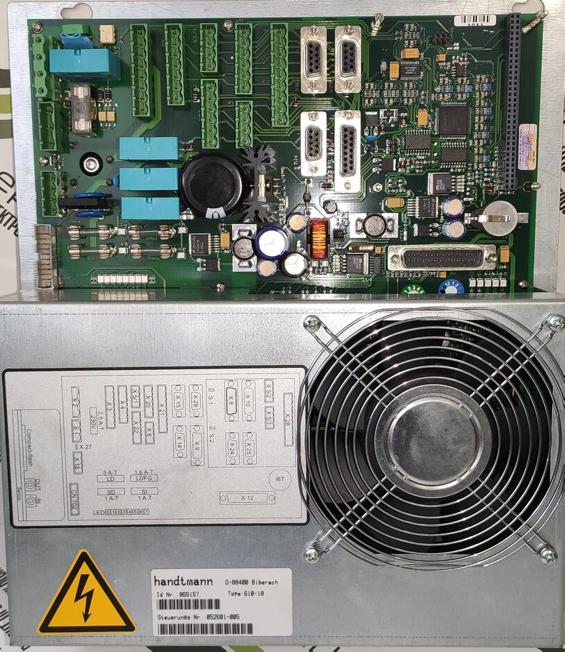

Sterowniki
SERIA VF 6XX HANDTMANN

MC2
Komputer stosowany najczęściej w nadziewarkach
rzemieślniczych VF608,VF610
monitor czarno biały.

MC3, MC4, MC5
Komputery stosowany najczęściej w nadziewarkach rzemieślniczych VF608,VF610
monitor kolorowy.

PCK2
Komputer stosowany najczęściej w nadziewarkach przemysłowych VF616, VF620, VF628, VF630 itp. monitor czarno biały.

PCK3, PCK4, PCK5
Komputer stosowany w nadziewarkach przemysłowych Vf616, VF620,VF62 VF630 itp. oraz nadziewarkach typu HVF (lej próżniowy)
monitor kolorowy. Komunikacja SERCOS lub EtherCAT. Obecnie stosowany PCK5.